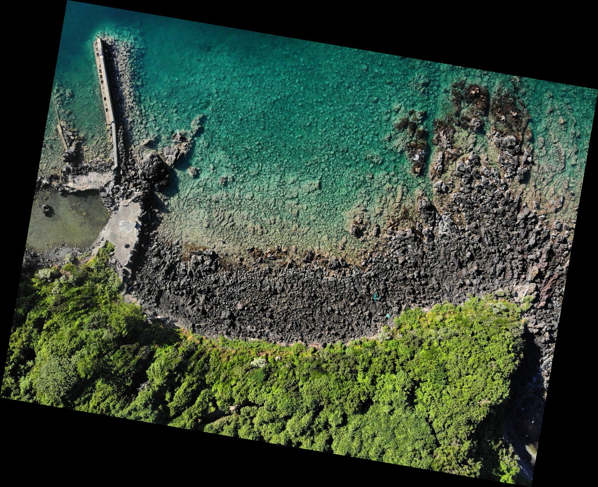
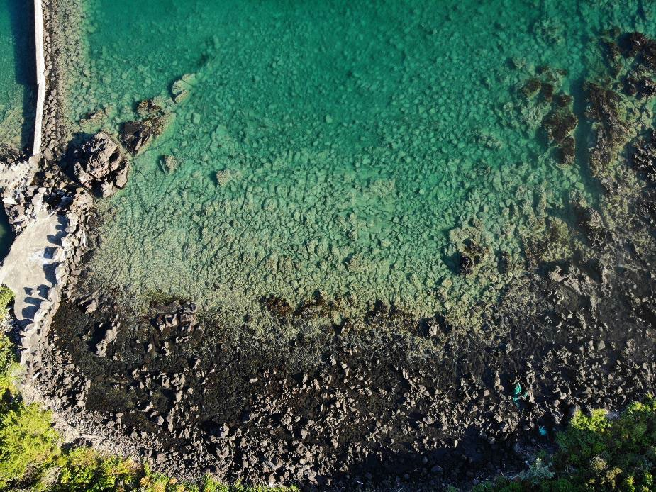
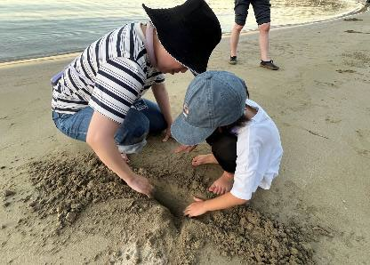
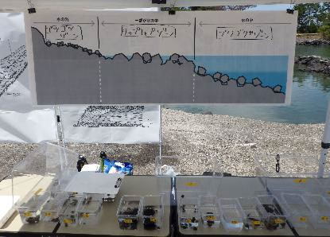
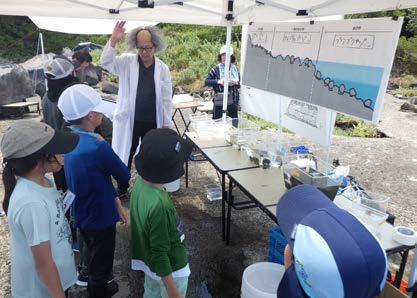
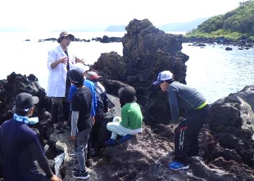
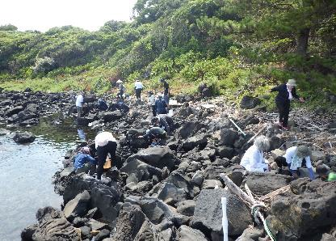
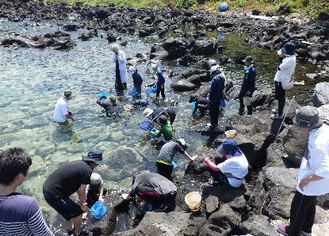
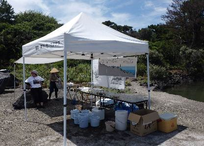
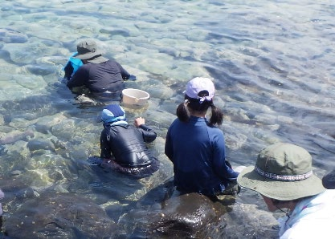

2025年8月3日（日）9:30〜11:30 ／ 笠山・虎ヶ崎
虎ヶ崎は、笠山の北側にある岬です。笠山は約1万年前の噴火でできた火山で、流れ出た溶岩が冷え固まってできています。












調査1・環境調査。陸上から磯のようす（地形や岩石の状態、水位）を観察し、磯を3つのゾーン（ゴツゴツ・チャプチャプ・ブクブク）に分けました。ゾーンの説明は 溶岩ラボのページ にまとめています。
調査2・生き物調査。3つのゾーンで生きものを採集し、種類・サイズ・採集者・環境を記録しました。
全部で23種67個体。図鑑は 生き物ずかん へ。
| ゾーン | 生物（種） | 個体数 | おもなサイズ(mm) |
|---|---|---|---|
| ゴツゴツ （8種21個体） | ヒザラガイ | 1 | 体長 35 |
| ベッコウガサ | 1 | 殻長 24 | |
| アマガイ | 7 | 殻長 10〜15 | |
| カメノテ | 1 | 体幅 25 | |
| ホンヤドカリ | 5 | 甲幅 約3〜5 | |
| イワガニ | 4 | 甲幅 18〜26 | |
| アカイソガニ | 1 | 甲幅 30 | |
| ムラサキウニ（殻） | 1 | 殻幅 48 | |
| チャプチャプ （19種41個体） | ヒザラガイ | 2 | 体長 35〜40 |
| マツバガイ | 1 | 殻長 20 | |
| ウノアシ | 1 | 殻長 24 | |
| コウダカアオガイ | 1 | 殻長 13 | |
| ヒメクボガイ | 3 | 殻幅 19〜23 | |
| イシダタミ・クロヅケガイ | 5 | 殻幅 15〜19 | |
| スガイ | 2 | 殻幅 24 | |
| アマガイ・アマオブネ | 3 | 殻長 11〜22 | |
| コオロギガイ・イボニシ・イソニナ | 5 | 殻高 28〜40 | |
| イナミガイ（殻） | 1 | 殻長 25 | |
| イソヨコバサミ | 5 | 甲幅 2〜30 | |
| ホンヤドカリ | 5 | 甲幅 2〜5 | |
| ムラサキウニ | 3 | 殻幅 55〜57 | |
| ドロメ・アナハゼ | 4 | 体長 38〜117 | |
| ブクブク （1種5個体） | ムラサキウニ | 5 | 殻幅 26〜82 |
この回で記録した23種は、ラボの成果物に反映されています
生き物ずかんを見る ›
約1万年前に噴火した笠山には、流れ出たマグマが固まってできた岩や、それがくだけて波にもまれた石によって、黒っぽい磯がいくつもできています。そこは昔から海藻が生いしげり、それを食べるサザエなど、いろいろな海の幸をとる「漁場」として大切にされてきました。
しかし、いつのころからか海藻が減り、黒いはずの水中の石は石灰藻におおわれて白くなり、なぜかウニばかりが目立ち、ほかの生きものをあまり見かけなくなってしまいました。そんな笠山の磯で、稲倉さん・新宅さん・田中さん・福井さん・三戸さん・村木さん・吉光さんたち特別調査員をふくむフィールドラボの活躍により、大きく3つの環境があること、そしてそれぞれの環境ならではの生きものが今もちゃんとすんでいることが分かりました。
この気づきを頭に置いて調査を積み重ね、図鑑をつくって世に示せば、多くの人が笠山の磯の今を知り、変化に目を向け、未来がどうなるかを考えていくエネルギーが生まれるはずです。そんなプロジェクトの最初を、みなさんといっしょにふみ出せたことをうれしく思います。